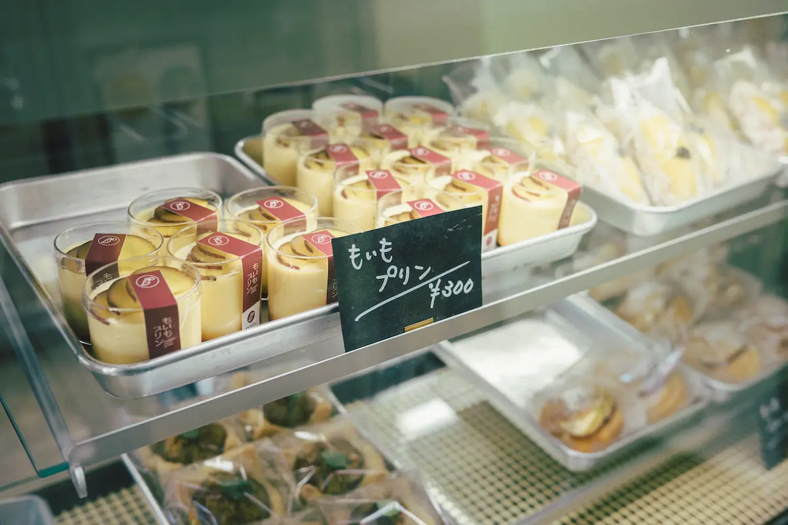

moimo


About Us
モイモについて

自慢の壷焼き芋をはじめ、焼き芋プリンやモンブラン、芋けんぴなどなど、どれをとってもモイモ自慢の美味しさです。
大地の栄養をしっかり蓄えたサツマイモを、ベストなタイミングで収穫、管理されたキュアリング貯蔵庫でじっくり熟成させた後、更にとびっきり美味しいスイーツに変身させました。 店内にはカフェスペースもご用意して皆様のお越しをスタッフ一同、お待ちしております。

Concept
モイモのこだわり
安心安全の栽培方法
善玉菌を増やすため厳選した有機肥料を使用し、安心・安全・おいしいサツマイモを栽培しています
徹底した熟成管理
温度・湿度を管理したキュアリング貯蔵を行うことで熟成期間を延長し、より完熟で甘いサツマイモを提供しています

完熟芋の加工品
熟成させたサツマイモは、当店でお楽しみいただける手作りスイーツに昇格させ、さらなるおいしさを発信しています